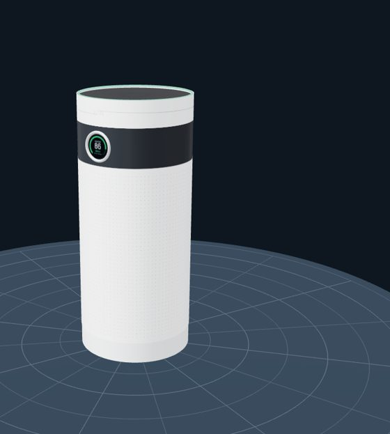
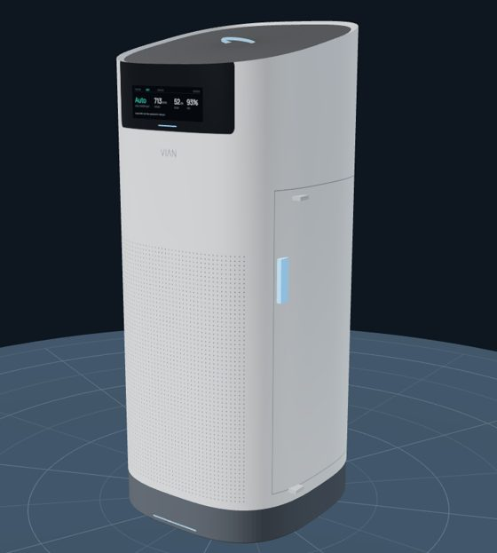
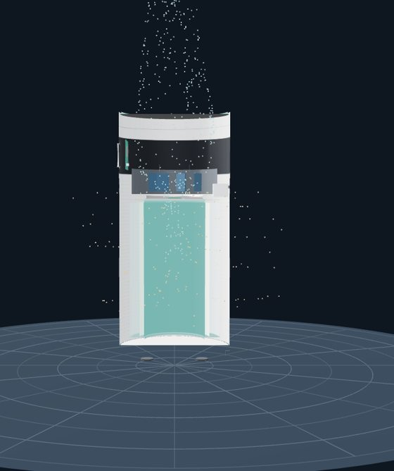
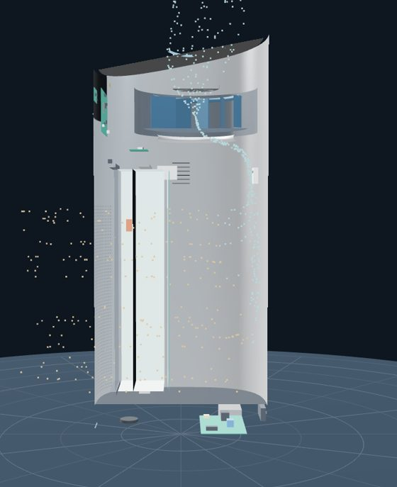
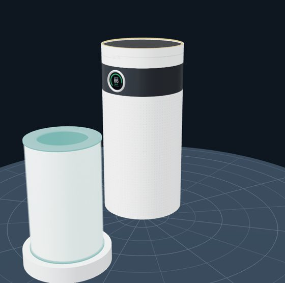

Two purifiers designed from a study of the world's leading brands: VIAN Home for living rooms and bedrooms, VIAN Hospital for operating theatres, ICUs and clinics. Open each one in 3D, play the explainer, and tap any part.



Home airflow: in from all sides, through the filter, up the clean core, out the top. The screen is outside the air jet.

Hospital airflow: front and side intake, three stages, sealed plenum, EC fan, out up and back.

Filter change: turn the base a quarter turn, slide it out. No tools, no clips.
Coverage claims vary a lot: many brands quote the area cleaned once per hour. VIAN quotes the honest size (about 5 air changes per hour) and the marketing size side by side.
| Brand / model | Coverage claim | Filter | Screen | App + smart | Price | Customers like | Customers dislike |
|---|---|---|---|---|---|---|---|
| Dyson Big+Quiet Formaldehyde | ≈ 1,000 sq ft (100 m²) | H13 HEPA, 5-yr; lifetime formaldehyde catalyst | LCD, 24-h graph | MyDyson: PM, VOC, NO₂, HCHO, CO₂; 0/25/50° jet | Premium | Quiet (38–56 dB), CO₂ sensor | Price |
| Dyson HushJet Compact | ≈ 203 sq ft | HEPA, 5-yr | Minimal | App + voice | Premium | 24–42 dB, small | Few on-device controls |
| Xiaomi Smart Air Purifier 4 Pro | 35–60 m² (375–650 sq ft) | 3-in-1 cylinder | OLED (Elite: touch) | Mi Home, voice, night mode | Budget–mid | CADR 500 m³/h, value | AQI accuracy doubts |
| Coway Airmega 150 / 400S | 361 sq ft (Mighty) to 1,560 sq ft | H13 + carbon | LED, ring | IoCare: 7-day history, eco mode, light sensor, Alexa | ₹ 15–17k (150); $749 list (400S) | Reliability, service in India | Filter cost (≈ ₹ 4,400), mixed sensor reviews |
| Blueair Blue Signature | Large rooms | Wrap filter + fabric pre-filter | Touchscreen | History, auto, night, OdorFence | Mid–premium | Side-table design, reliability | Louder (35–60 dB) |
| Levoit Core 600S / Vital 200S | ≈ 400–635 sq ft | H13 + carbon, washable pre-filter | LED touch | VeSync: schedules, timer, filter % | ≈ $189 (600S) | Performance per rupee | Loud on high, boxy |
| Philips 3000i / 4000i | ≈ 220 sq ft (3200) | HEPA + carbon | Number + colour ring | AeraSense, allergen/virus modes, outdoor AQI | ₹ 16–30k | Brand, smart modes | App weak, filters blacken fast |
| Shark NeverChange HP301/HP300 | 650 sq ft (US) / 1,400 sq ft (India listing) | True HEPA 14, up to 5-year filter | Air-quality display | Clean Sense IQ, odour tech | $399.99 (HP301); ≈ ₹ 30k (HP300) | No filter cost for years | High up-front price |
| Samsung Bespoke Cube | ≈ 350 sq ft | 4-filter HEPA | Small | Laser sensor, SmartThings | AUD 1,699 (AX70) | Custom colour panels | Complex setup |
| LG PuriCare AeroTower | ≈ 818 sq ft | True HEPA, UVnano option | Controls + remote | ThinQ app, fan mode | $549–599 | Fan + purifier | Mid lab results |
| Molekule Air Pro | ≈ 1,000 sq ft | PECO (destroys pollutants) | Touch | App | $1,014.99 | Novel tech | Very expensive |
| Airdog X5 | Large | Washable ionic plates | LED | App | Mid | No filter purchases | Trace ozone, weekly cleaning |
| Mila / Rabbit Air A3 | Medium–large | HEPA + carbon | Small | Transparent app (Mila), colour/art panels (Rabbit) | Mid–premium | Design, honesty of app | Price |
| IQAir HealthPro / Camfil City M (hospital) | ≤ 115 m² / 75 m² | HyperHEPA H12/13 / certified H14 | Basic | Basic | High | Hospital trust, long filter life | Basic smart features, bulky |
Sources at the bottom of the page. Prices and claims are from manufacturer and retailer listings found in November 2026 and change often.
| Technology | Used by | What it does | Good | Watch out | VIAN |
|---|---|---|---|---|---|
| Pre-filter mesh | Nearly all | Catches hair, lint, big dust | Cheap, washable | Needs cleaning | Yes, washable, 5-wash tracking |
| HEPA H13 | Coway, Xiaomi, Levoit, Dyson | ≥ 99.95% of hardest-to-catch particles | Proven, no by-products | Replace when loaded | Yes (Home, Hospital standard pack) |
| HEPA H14 | Shark NeverChange, Camfil | ≥ 99.995% | Medical grade | Higher resistance, cost | Hospital theatre pack |
| Activated carbon | Most | Adsorbs smells and VOCs | Odour removal | Saturates in weeks to months | Yes + cheap swappable odour insert |
| Formaldehyde catalyst (MnO₂ / SCO) | Dyson Formaldehyde | Breaks HCHO into CO₂ + water | Does not saturate | Only targets HCHO | Yes, built into the carbon layer |
| Long-life filter (5-year) | Shark, Dyson | Very large filter mass | No yearly cost | High price, big unit, no odour refresh | Option: Long-life filter pack |
| Ionizer / plasma | Sharp Plasmacluster, Airdog | Charges particles | Low resistance | Can make ozone | No (0 ppm ozone promise) |
| UV-C lamp | LG UVnano, some hospital units | Kills germs on surfaces | Hygiene claim | Ozone risk, eye safety | Not fitted; future option |
| PECO | Molekule | Light-activated destruction | Novel | Very expensive | No |
| Complaint (from reviews) | VIAN fix |
|---|---|
| Filters cost too much and need changing often | Home filter ₹ 1,999, hospital pack ₹ 3,999; app uses real dust load, not a timer; Long-life option |
| Loud on high speed | 360° intake and big filter area keep air slow; Auto ramps slowly; noise caps per room |
| Air quality reading looks fake or drifts | Laser + gas sensors in their own vent; sensor health check and cleaning reminder in the app; shows "sensor needs cleaning" instead of a wrong number |
| Wi-Fi drops, app shows zero or stale data | Bluetooth fallback, last-update time on every value, offline control from the screen and remote |
| Fan bearing noise after 6–18 months | Ball-bearing BLDC rated 50,000 h, 5-year motor warranty |
| Flimsy build | Thick PC/ABS V-0 moulding, aluminium ring, quarter-turn bayonet base |
| Hard setup | Scan QR, Bluetooth pairing in under a minute |
| Filters not available locally | Sold in the app with auto-reorder; NFC confirms genuine |
| Ozone worries with ionizers | No ionizer, no UV lamp: 0 ppm |
Brands mostly use injection-moulded plastics: Xiaomi states ABS for its 4 Lite, Dyson uses ABS. Stainless steel and GI sheet are not needed for a home purifier and add cost and weight.
| Part | VIAN Home | VIAN Hospital | Why |
|---|---|---|---|
| Body | PC/ABS, UL94 V-0, antimicrobial, matte | PC/ABS, UL94 V-0, antimicrobial | Strong, fire-safe, wipe-clean, no rust |
| Base / frames | Glass-filled PP | Glass-filled PP / PA6-GF30 inner frame | Stiff, light, cheap to mould; replaces GI and SS |
| Trim | Anodised aluminium ring | Graphite PC/ABS visor | Premium touch points |
| Filter | PET mesh, synthetic H13, coconut carbon, MnO₂ | ABS frame, glass-fibre H13/H14, carbon | Proven media |
| Seals, feet | Silicone, TPE | Silicone, EPDM, TPE | Air-tight, quiet |
| Metal used | Motor, screws, aluminium ring only | Fan, screws, earth plate only | No SS or GI sheet body |
Each design was checked with engineering formulas: fan laws, pressure budgets, CADR and room air changes, leak flow through gaps, carbon adsorption, dust loading, heat, tip-over and power. The first run found 5 problems; the designs were changed and re-tested.
These are calculations from the design, not lab measurements. The prototype must be measured for CADR (AHAM AC-1 / GB/T 18801), noise, ozone and safety (IEC 60335-2-65; hospital: IEC 60601-1).
No product has zero risks. A pitch is stronger when every risk already has an answer.
| Item | VIAN Home | VIAN Hospital |
|---|---|---|
| Bill of materials (China / India assembly) | ≈ ₹ 6,800 / ₹ 7,400 | ≈ ₹ 39,000–67,000 / ₹ 44,000–77,000 |
| MRP (incl. GST) | ₹ 14,999 (Pro with CO₂: ₹ 17,999) | ≈ ₹ 1.5–2 lakh |
| Replacement filter | ₹ 1,999 (cost ≈ ₹ 450–700) | ₹ 3,999 pack (cost ≈ ₹ 1,850–2,750 landed) |
| Odour insert | ₹ 299 every 2 months (cost ≈ ₹ 60) | ₹ 499 quarterly |
| Filter income per unit per year | ≈ ₹ 3,800 sales | ≈ ₹ 9,500 sales |
| Competitor reference | Coway 150 ≈ ₹ 15–17k; Xiaomi 4 Pro class; Shark HP300 ≈ ₹ 30k | IQAir HealthPro / Camfil City M class |
Planning estimates, not quotes.
STL files of the outer shape, ready for any 3D printer slicer. Hospital model at 1:5 scale (216 mm tall). Home at full size in parts, and at 1:2 scale.
Files download from the public VIAN website (adrianaantony75-oss.github.io/vian-hospital-03).